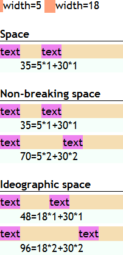
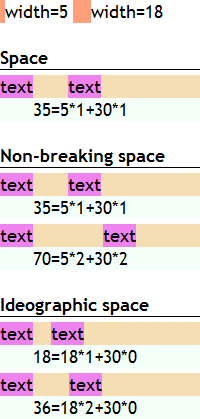
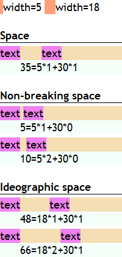
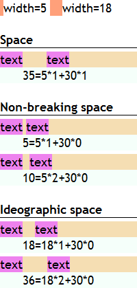

根据 CSS 2.1 规范中的描述，'word-spacing' 特性指定了单词 (word) 之间的间距特性。
单词间距算法取决于用户端，同时也会受对齐 (参见 'text-align' 特性)
的影响。当应用了空白处理规则后，单词间距会作用在文本中的空格 (U+0020)、非间断空格 ( , U+00A0)、表意空格 (全角空格, U+3000)
的左侧。
关于 'border-collapse' 特性的更多信息，请参考 CSS2.1 规范：16.4 Letter and word spacing: the 'letter-spacing' and 'word-spacing' properties 中的内容。
若行框内包含非文本内容 (如图片、表单元素等替换元素)，设定了 'word-spacing' 特性，则在 Chrome Safari 中，单词间隙不会作用在这些内容之间的空白符上。
这个问题将造成设定的 'word-spacing' 特性所带来的间隙在不同浏览器之间出现差异，影响文本内容的布局。
| Chrome Safari |
|---|
CSS 规范中仅描述了 'word-spacing' 特性设定的单词间距会作用在文本中的空格 (U+0020)、非间断空格 ( , U+00A0)、表意空格 (全角空格, U+3000) 的左侧。
下面将针对 HTML 代码中出现的普通空格、 、全角空格测试 'word-spacing' 特性带来的间距，其中 及全角空格还要测试当出现多个1的情况。
注 1: 由于连续的普通空格在 HTML 中会被自动合并为一个，故这里不再测试多个普通空格的情况。
根据问题描述构造如下测试样例：word-spacing.html
<!DOCTYPE html> <html> <head> <meta charset="gbk" /> <style> *
{ margin:0; padding:0; border:0; font:18px 'Trebuchet MS'; } h1 { font-weight:bold; border-bottom:1px
solid black; } p span { background:lightsalmon; } div.ws { word-spacing:30px;
background:wheat; margin-top:5px; fodnt-size:18px; } div.info { background:mintcream; } div span {
background:violet; } </style> <script> function $(id) { return document.getElementById(id);
} window.onload = function () { var nbsp_width = $('nbsp_width').previousSibling.offsetWidth,
ispace_width = $('ispace_width').previousSibling.offsetWidth, w_spacing = 30, a = [nbsp_width,
nbsp_width, nbsp_width, ispace_width, ispace_width], t = [1, 1, 2, 1, 2];
$('nbsp_width').appendChild(document.createTextNode('width=' + nbsp_width));
$('ispace_width').appendChild(document.createTextNode('width=' + ispace_width)); for (var i = 1; i <=
5; i++) { var g1_off = $('g' + i + '_2').getBoundingClientRect().left - $('g' + i +
'_1').getBoundingClientRect().right; $('i' + i + '').appendChild(document.createTextNode(g1_off + '=' +
a[i - 1] + '*' + t[i - 1] + '+' + w_spacing + '*' + (g1_off - a[i - 1] * t[i - 1]) / w_spacing)); $('i'
+ i + '').style.paddingLeft = $('g' + i + '_1').offsetWidth + 'px'; } } </script> </head>
<body> <p> <span> </span><em
id="nbsp_width"></em> <span> </span><em
id="ispace_width"></em> </p> <br /> <h1>Space</h1> <div
class="ws"> <span id="g1_1">text</span> <span
id="g1_2">text</span> </div> <div class="info"
id="i1"></div> <br /> <h1>Non-breaking space</h1> <div
class="ws"> <span id="g2_1">text</span> <span
id="g2_2">text</span> </div> <div class="info"
id="i2"></div> <div class="ws"> <span
id="g3_1">text</span> <span
id="g3_2">text</span> </div> <div class="info"
id="i3"></div> <br /> <h1>Ideographic space</h1> <div
class="ws"> <span id="g4_1">text</span> <span
id="g4_2">text</span> </div> <div class="info"
id="i4"></div> <div class="ws"> <span
id="g5_1">text</span> <span id="g5_2">text</span> </div>
<div class="info" id="i5"></div> </body> </html>
上述代码分为 5 组，每组均为 DIV 元素设定了 word-spacing:30px;，其内包含两个 SPAN 元素，SPAN 元素内仅包含一个单词，SPAN 元素之间存在不同种类的空格。第一组为普通空格，第二组为一个 空格，第三组为两个 空格，第四组为一个全角空格，第五组为两个全角空格。最后通过脚本检测两个 SPAN 元素 (即两个单词) 之间的间距。
在各浏览器中的表现如下：
| IE6 IE7 IE8(Q) | IE8(S) Firefox | Chrome Safari | Opera |
|---|---|---|---|
|  |  |  |  |
在测试代码的字体样式设定下，空格、 的宽度为 5px，全角空格宽度为 18px。
可以看到，仅 IE6 IE7 IE8(Q) 完整支持了三种空格左侧加入 'word-spacing'。
使用 'word-spacing' 特性时需谨慎，为避免兼容性问题，应保证单词之间仅由普通空格 (U+0020) 隔开。
| 操作系统版本: | Windows 7 Ultimate build 7600 |
|---|---|
| 浏览器版本: |
IE6
IE7 IE8 Firefox 3.6.10 Chrome 8.0.552.5 dev Safari 5.0.2 Opera 10.63 |
| 测试页面: | word-spacing.html |
| 本文更新时间: | 2010-10-21 |
word-spacing word 单词 间距 inline text 文本 空格 space 全角 full-width nbsp